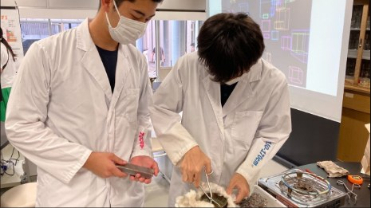
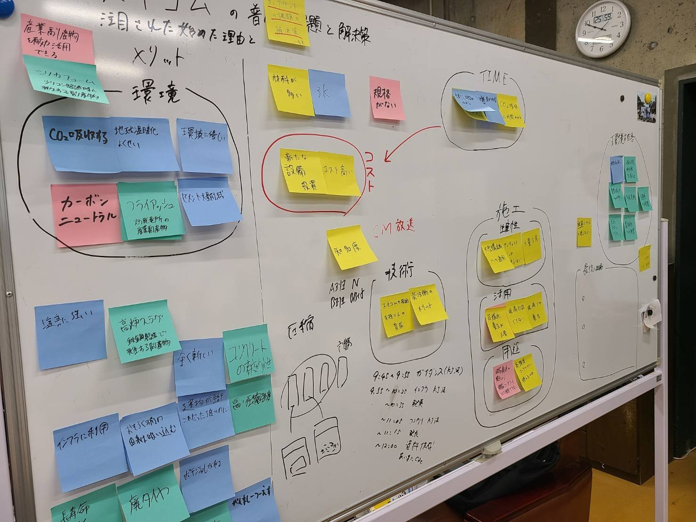
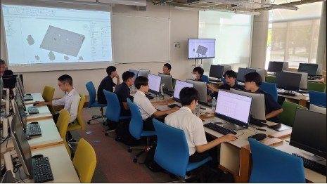
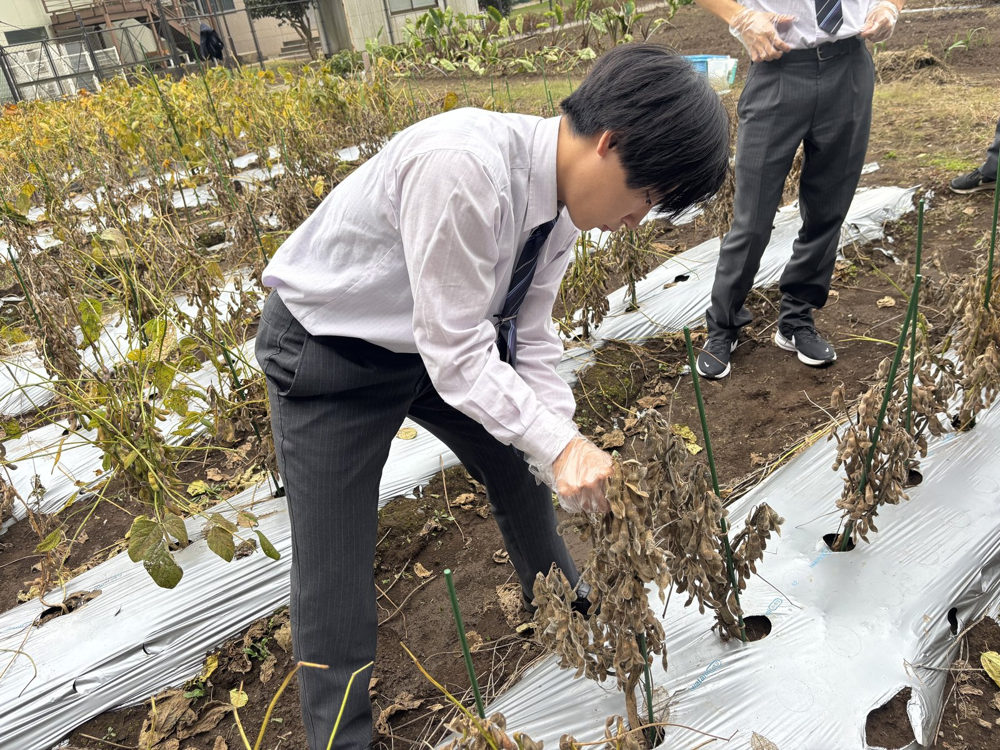

哲学シンキング特別授業「ゲノム編集技術がもたらすELSI」
日本で初めて哲学を事業の中心に据えた企業「クロス・フィロソフィーズ株式会社」より、吉田幸司先生をお招きし、特別授業を実施しました。今回のテーマは「ゲノム編集技術がもたらすELSI（倫理的・法的…
くわしく →01 / 09 — INQUIRY EDUCATION
「哲学という羅針盤」と「科学という武器」を、同時に手にする。
VISION
東洋大学附属牛久が目指す探究教育の核は、東洋大学の伝統である「哲学」と最先端の「データサイエンス」を融合させ、現代社会の複雑な課題に立ち向かう「総合知」を育成することにあります。2026年度、全国でわずか3校という極めて高い評価を得て採択された「文理融合型SSH」として、本校は従来の理数教育の枠を超えた新しい探究のカタチを提案します。
まず、全教科で展開される「哲学シンキング」を通じて、生徒は事象の表面をなぞるだけでなく「なぜそうなのか」「真に価値があるものは何か」という本質的な問いを立てる力を磨きます。この哲学的思考を土台に、AIやICTを活用した「データサイエンス」の手法を掛け合わせることで、主観的な問いを客観的なエビデンスで実証するプロセスを確立します。
「哲学という羅針盤」と「科学という武器」を同時に手にし、論理と感性の両面から課題を捉える。これこそが本校の目指す文理融合の姿です。地域社会の課題解決やグローバルな発信活動を通じ、生徒たちは自らの「好き」や「疑問」を社会実装へと繋げていきます。科学と哲学の対話から、まだ見ぬ未来を自らの手でデザインし、新しい価値を創造できる真のリーダーを、東洋大牛久は育てていきます。




THREE PILLARS
全教科で展開。「なぜそうなのか」「真に価値があるものは何か」という、本質的な問いを立てる力を磨きます。
AIやICTを活用し、主観的な問いを客観的なエビデンスで実証するプロセスを確立します。
地域社会の課題解決やグローバルな発信活動を通じて、自らの「好き」や「疑問」を社会実装へつなげます。
GOAL
「総合知」を核とした「哲学的思考（問いを立てる力）× データサイエンス（科学的解決）」融合プログラムを開発し、全校に普及定着させることで、文理の壁を超越した次世代のグローバルリーダーを育成する。
MODEL